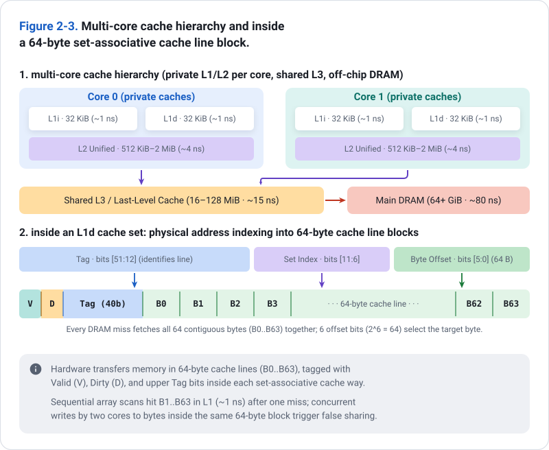
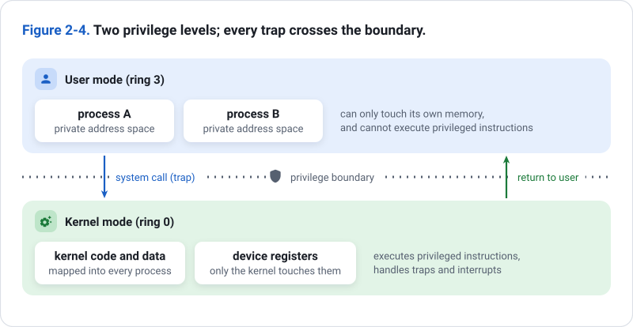
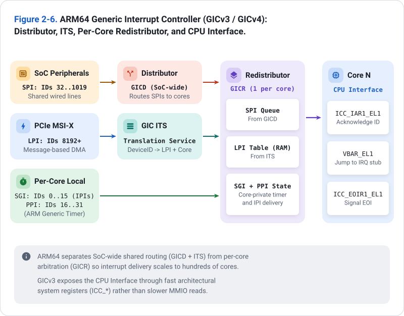
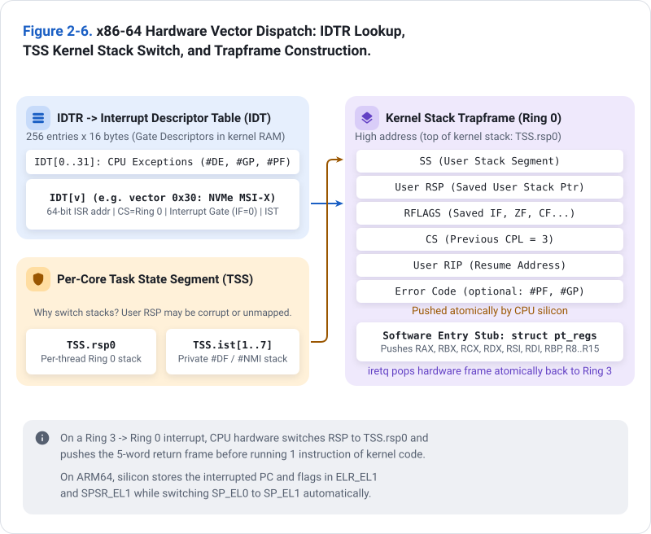
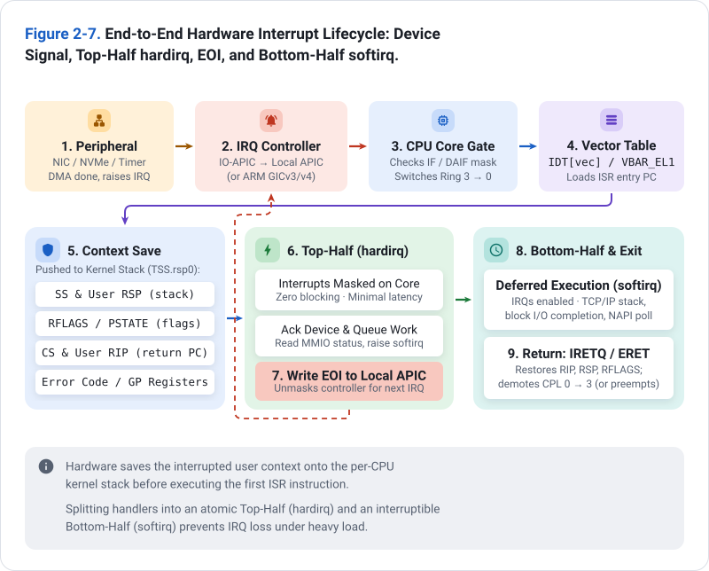

2. The Architectural Substrate and Execution Constraints
The design and operational behavior of an operating system are fundamentally dictated by the invariant properties of the underlying hardware. These architectural properties define the boundaries of sequential instruction execution, the necessity of virtual memory management, and the hardware mechanisms required to enforce system integrity and asynchronous I/O coordination.
To keep architectural concepts independent of vendor-specific mnemonics, each mechanism in this chapter is presented first in general hardware terms, followed by a consolidated reference mapping across x86-64 and ARM64 (AArch64) in Tables 2-1 and 2-2.
2.1 The Execution Model and the Atomicity Gap
A processor core operates via a continuous fetch-decode-execute cycle. At any discrete clock edge, the architectural state of an executing thread is encapsulated by its on-chip register file. Because registers reside directly within the execution pipeline, register access completes within a single clock cycle (approximately 0.3 nanoseconds), whereas off-chip main memory requires hundreds of cycles. Across contemporary 64-bit architectures, the register file is partitioned into five functional classes:
- Program Counter: Holds the virtual address of the next machine instruction to be fetched from the L1 instruction cache. During sequential execution, the control unit automatically advances the program counter by the length of the decoded instruction; control-flow transfers (branches, procedure calls, system calls, and hardware interrupts) overwrite this register with a new target address.
- Stack Pointer: Points to the active downward-growing boundary of the thread’s call stack in virtual memory. Allocating space for local variables decrements the stack pointer, whereas deallocating a stack frame increments it. Both the System V AMD64 ABI and the ARM64 Procedure Call Standard (AAPCS64) mandate 16-byte stack alignment at procedure call boundaries to satisfy vector load and store alignment requirements.
- Frame Pointer: Anchors the invariant base of the current function’s activation record. Although the stack pointer fluctuates as temporary operands are pushed and popped, the frame pointer remains fixed from function entry until return. Saving the caller’s frame pointer adjacent to the return address creates a singly linked chain of activation records, enabling debuggers and kernel sampling profilers to reconstruct call stacks in
O(depth)pointer dereferences. - Processor Status and Control Flags: Stores arithmetic condition codes (such as zero, carry, sign, and overflow) alongside privileged processor control bits. For operating system kernels, the critical control state is the hardware interrupt mask: clearing the interrupt-enable bit causes the core to defer external asynchronous interrupts while updating sensitive kernel structures.
- General-Purpose Registers: Provide single-cycle operand storage for arithmetic, pointer manipulation, and argument passing (16 general-purpose registers on x86-64; 31 on ARM64). By calling-convention contract, these registers are partitioned into caller-saved (volatile) registers, which a callee may overwrite freely, and callee-saved (non-volatile) registers, whose prior values the callee must preserve before returning.
Table 2-1. Architectural register mapping across x86-64 and ARM64.
| Functional Role | x86-64 Register | ARM64 (AArch64) Register |
|---|---|---|
| Program Counter | RIP | PC |
| Stack Pointer | RSP | SP (SP_EL0 in user mode, SP_EL1 in kernel mode) |
| Frame Pointer | RBP | x29 (FP) |
| Return Address Storage | Pushed onto stack by CALL | Stored in Link Register x30 (LR) by BL |
| Status and Interrupt Mask | RFLAGS (Interrupt Flag IF, bit 9) | PSTATE (Interrupt mask bits DAIF) |
| Integer Argument Registers | RDI, RSI, RDX, RCX, R8, R9 (first 6) | x0 through x7 (first 8) |

2.1.1 The Fetch-Decode-Execute Datapath and Function Activation Records
To sustain high instruction throughput despite memory latency, a superscalar processor organizes execution into four microarchitectural stages:
- Instruction Fetch: Retrieve the next instruction bytes from the L1 instruction cache using the Program Counter.
- Decode and Register Rename: Parse instruction opcodes and map architectural register names onto internal physical registers so independent instructions can execute concurrently out of order without false write hazards.
- Execute and Memory Access: Compute arithmetic operations in the Arithmetic Logic Unit (ALU) or evaluate effective memory addresses, consulting the Translation Lookaside Buffer (TLB) and L1 data cache while buffering uncommitted writes in the core’s hardware store buffer.
- Commit (Retire): Although execution proceeds out of order internally, the reorder buffer retires instructions in strict program order, committing architectural register updates and draining stores to the coherent cache hierarchy. If an instruction faults (for example, on an invalid memory reference or division by zero), all younger speculative instructions are discarded cleanly.
Upon procedure invocation (CALL on x86-64; BL on ARM64), caller and callee cooperate to construct a function activation record (stack frame) in virtual memory (Figure 2-2). The caller places integer parameters in the designated argument registers and records the return address. The callee prologue saves the caller’s frame pointer, anchors its own frame pointer to the base of the new frame, preserves any callee-saved registers it modifies, and decrements the stack pointer to reserve local storage. Upon function return, the epilogue reverses these operations and transfers control back to the saved return address.

2.1.2 Formal Derivation of the Atomicity Gap
Although the reorder buffer preserves sequential semantics within a single core, the processor datapath does not guarantee that a composite high-level language statement executes atomically across multiple cores. This discrepancy between source-level notation and machine-level execution defines the atomicity gap.
Consider a shared 64-bit integer counter incremented concurrently by two processor cores (counter++), with initial value 42. Because arithmetic units operate on core-private registers rather than directly on main memory, the compiler lowers the increment into a three-instruction Read-Modify-Write (RMW) sequence:
// x86-64 Read-Modify-Write // ARM64 Read-Modify-Write
1. mov rax, QWORD PTR [rip + counter] 1. ldr x0, [x1] // Load 42 into core-private register
2. add rax, 1 2. add x0, x0, #1 // Compute 43 in local ALU
3. mov QWORD PTR [rip + counter], rax 3. str x0, [x1] // Store 43 back to coherent cache line
Under concurrent execution, the two cores may interleave these instructions across the memory subsystem:
- Core 0 executes Step 1 and loads
42into its private register. - Core 1 executes Step 1 prior to Core 0’s store, likewise loading
42. - Both cores independently evaluate Step 2 in their local ALUs, producing
43. - Core 0 executes Step 3, storing
43to the shared cache line. - Core 1 executes Step 3, overwriting the same location with
43.
Despite two distinct increments, the final stored value is 43 rather than 44, producing a concurrency anomaly termed a lost update. Eliminating the atomicity gap requires either hardware atomic instructions that maintain exclusive cache-line ownership across the entire Read-Modify-Write cycle (lock xadd on x86-64; ldaddal or load-linked/store-conditional pairs on ARM64) or kernel-coordinated synchronization primitives, examined in Chapters 4 and 6.
2.2 Memory Hierarchy and Locality Dynamics
The memory subsystem is organized as a multi-tiered hierarchy balancing capacity against access latency. Waiting 60 to 100 nanoseconds for an off-chip Dynamic Random-Access Memory (DRAM) read stalls a 3 GHz processor for more than 200 clock cycles. Hardware mitigates this disparity through progressively smaller, lower-latency on-chip Static Random-Access Memory (SRAM) caches:
- Registers: Approximately 0.3 ns (1 cycle), private to each execution pipeline.
- L1 Cache (split instruction and data): Approximately 1 ns (3 to 4 cycles), 32 to 64 KiB private per core.
- L2 Cache: Approximately 3 to 5 ns (10 to 14 cycles), 256 KiB to 4 MiB private per core.
- L3 / System-Level Cache: Approximately 12 to 20 ns (35 to 55 cycles), 8 to 128 MiB shared across cores.
- Main DRAM: Approximately 60 to 100 ns (200+ cycles), gigabytes to terabytes of physical capacity.
The effectiveness of this hierarchy depends directly on two empirical properties of program memory access:
- Temporal Locality: Recently referenced memory addresses (such as loop counters and active stack variables) exhibit a high probability of being referenced again in the near future.
- Spatial Locality: Addresses contiguous to a recently referenced byte (such as sequential array elements) exhibit a high probability of subsequent access.
To exploit spatial locality, the memory subsystem transfers data between DRAM and cache in fixed 64-byte cache lines (128 bytes on certain ARM64 implementations). Sequential traversal over contiguous memory allows hardware stride prefetchers to fetch upcoming lines before demand loads arrive, whereas pointer chasing across scattered heap allocations incurs repeated DRAM stalls.
Maintaining cache coherence at 64-byte granularity introduces the multi-core pathology of false sharing. When Core 0 and Core 1 modify logically independent variables residing within the same 64-byte cache line, the hardware coherence protocol (such as Modified-Exclusive-Shared-Invalid (MESI)) must repeatedly transfer exclusive ownership of the entire line between cores, degrading parallel throughput (measured empirically in Chapter 17).

2.3 Privilege Domains and Boundary Enforcement
System integrity is enforced through the hardware-mediated bifurcation of execution into distinct privilege levels:
- User Mode (
Ring 3on x86-64;EL0on ARM64): The restricted execution domain for application processes. The processor prohibits privileged instructions (such as modifying page-table root registers, altering interrupt masks, or programming device controllers) and confines memory references to virtual pages marked user-accessible. Any violation raises an immediate hardware exception that transfers control to the kernel. - Kernel Mode (
Ring 0on x86-64;EL1on ARM64): The privileged domain in which the operating system kernel executes with unrestricted access to memory-management hardware, timers, interrupt controllers, and I/O interfaces. Contemporary processors additionally define a hypervisor tier (VMX Rooton x86-64;EL2on ARM64, detailed in Chapter 16) to isolate guest kernels.
To reduce the latency of mode transitions, the kernel is commonly mapped into the upper portion of each process’s virtual address space, marked accessible only in kernel privilege mode. While this shared mapping avoids a full page-table replacement on system call entry, it imposes a strict security invariant: the kernel must validate every user-supplied pointer and buffer length before dereferencing it.

2.3.1 Device Communication Mechanisms: MMIO and DMA
Interaction between the processor and external peripheral controllers relies on two complementary hardware mechanisms:
- Memory-Mapped I/O (MMIO): Rather than requiring specialized I/O instructions for every peripheral, the platform reserves dedicated ranges of the physical address space and routes them not to DRAM chips, but to control and status registers inside hardware controllers (storage controllers, network interfaces, and interrupt controllers). When kernel code executes an ordinary store instruction to an MMIO physical address (for example,
0xFEE0_00B0on x86-64), the interconnect delivers that write directly to the target device register. Because user-mode page tables omit MMIO physical ranges, unprivileged processes cannot access device registers directly. - Direct Memory Access (DMA): Transferring bulk storage blocks or network packets via CPU-driven register loads and stores would consume processor cycles proportionally to I/O bandwidth. Modern peripheral controllers therefore incorporate a DMA engine capable of reading and writing physical DRAM directly over the PCIe bus independently of the CPU core. To initiate a transfer, the kernel constructs a descriptor in memory specifying the source, target physical DRAM address, and transfer length, notifies the controller via a single MMIO doorbell write, and schedules other runnable threads on the core. Once the DMA engine finishes writing the requested bytes into DRAM, the peripheral signals completion asynchronously by asserting a hardware interrupt.
2.4 Synchronous Traps and the Asynchronous Interrupt Subsystem
Control transfers from user mode to kernel mode fall into two fundamental classes determined by their causal relationship to the executing instruction stream:
- Synchronous Traps and Exceptions: Events triggered directly by the currently executing instruction and therefore deterministic with respect to the instruction stream. This class comprises intentional system calls (
syscallon x86-64;svc #0on ARM64, Chapter 9), recoverable faults (such as a page fault, where the kernel maps the missing physical frame and restarts the faulting instruction), and unrecoverable exceptions (such as integer division by zero or illegal instruction execution). - Asynchronous Hardware Interrupts: Signals originating outside the processor’s instruction stream, such as a DMA transfer completion from an NVMe controller, packet arrival at a network interface, or expiration of a hardware timer. An asynchronous interrupt may arrive between any two instructions of whatever thread currently occupies the core.
2.4.1 Interrupt Controllers and Routing Topologies (APIC and GICv3)
Early uniprocessor systems multiplexed a small number of physical peripheral interrupt lines through a single programmable interrupt controller wired to one interrupt pin on the processor. Scaling to multi-core servers with high-throughput PCIe devices invalidates that single-wire topology for three structural reasons:
- Pin scarcity and shared-line contention: Physical interrupt wires cannot scale to hundreds of independent device queues; sharing a single line among multiple peripherals forces the kernel to poll every attached driver on each assertion.
- Core affinity and cache locality: Multi-queue network and storage controllers maintain distinct per-core submission and completion queues; directing Queue
kcompletions specifically to Corekpreserves L1/L2 cache locality and eliminates cross-core lock contention. - Inter-processor signaling: Multi-core kernels require a low-latency hardware mechanism by which one core interrupts sibling cores to coordinate TLB invalidations (shootdowns) or scheduler wakeups.
Consequently, modern multi-core interrupt subsystems support four distinct signaling paths: shared legacy peripheral wires, message-based PCIe interrupts, per-core preemption timers, and inter-processor interrupts.
x86-64 Interrupt Architecture (IO-APIC, MSI-X, and Local APIC)
The x86-64 architecture distributes interrupt routing between the platform chipset and a dedicated Local Advanced Programmable Interrupt Controller (Local APIC) integrated onto the die of each CPU core (Figure 2-5).

- Chipset IO-APIC (Legacy Wired Lines): Legacy platform peripherals connect via physical lines to the chipset IO-APIC, which maintains a programmable table of 24 or more Redirection Table Entries (RTEs). During initialization, the kernel programs each RTE to associate physical wire
kwith an 8-bit interrupt vector (32..255; vectors0..31are architecturally reserved for internal processor exceptions) and a destination Local APIC core identifier. - Message Signaled Interrupts (MSI-X): Combining DMA and MMIO (Section 2.3.1) removes physical interrupt wiring for PCIe devices entirely. Because every core’s Local APIC is mapped to a well-known physical MMIO region (
0xFEE0_0000, with the destination core ID encoded in upper address bits), a PCIe controller signals an interrupt by issuing a 4-byte DMA write directly to that MMIO address, encoding the target vector (32..255) in the payload. MSI-X bypasses the chipset IO-APIC, provides up to 2,048 independent vectors per device, eliminates shared-line polling, and maps individual device queues directly to designated cores. Furthermore, PCIe write ordering guarantees that all preceding DMA data writes are globally visible in DRAM before the MSI-X interrupt write reaches the Local APIC. - Per-Core Local APIC Arbitration (
IRR,ISR, andEOI): Each core’s Local APIC aggregates four inputs: routed IO-APIC messages, direct PCIe MSI-X writes, Inter-Processor Interrupts (IPIs) transmitted by peer cores, and local APIC Timer expirations. To arbitrate concurrent arrivals without dropping signals, the Local APIC maintains two 256-bit state registers (one bit per vector0..255):- Interrupt Request Register (
IRR): Records pending vectors received by the core that have not yet begun execution. - In-Service Register (
ISR): Records vectors whose handlers are currently executing on the core. - When the highest-priority pending bit in
IRRoutranks the highest active bit inISR(andRFLAGS.IF == 1), the Local APIC atomically clears the bit inIRR, sets the corresponding bit inISR, and delivers the vector to the core. Upon completing the urgent device handshake, the kernel writes0to the Local APIC End-of-Interrupt (EOI) register, clearing the highest active bit inISRand enabling delivery of subsequent pending vectors.
- Interrupt Request Register (
ARM64 Interrupt Architecture (GICv3 / GICv4)
ARM64 systems implement the identical four signaling paths through the Generic Interrupt Controller (GICv3 / GICv4) architecture (Figure 2-6):

- Distributor (
GICD): Centralizes configuration and routing for chip-wide wired lines, designated Shared Peripheral Interrupts (SPI, IDs32..1019). - Interrupt Translation Service (
ITS): Receives PCIe MSI-X DMA doorbell writes and translates(DeviceID, EventID)tuples via memory-resident tables into Locality-Specific Peripheral Interrupts (LPI, IDs8192+) routed to a designated core. - Per-Core Redistributor (
GICR): Manages per-core arbitration and core-private sources: Software Generated Interrupts (SGI, IDs0..15) for cross-core signaling and Private Peripheral Interrupts (PPI, IDs16..31) for core-local sources such as the ARM Generic Timer. - CPU Interface System Registers: Rather than relying on uncached MMIO reads during interrupt entry, GICv3 exposes each core’s interface through architectural system registers: the kernel reads
ICC_IAR1_EL1to acknowledge the highest-priority pending interrupt ID and writesICC_EOIR1_EL1to signal End of Interrupt.
Table 2-2. Architectural correspondence between x86-64 APIC and ARM64 GICv3/GICv4 interrupt subsystems.
| Interrupt Function | x86-64 (APIC) | ARM64 (GICv3 / GICv4) |
|---|---|---|
| Shared wired peripheral lines | Chipset IO-APIC (RTE -> Vectors 32..255) | Distributor (GICD) -> SPI (IDs 32..1019) |
| PCIe DMA message interrupts | MSI-X write to target Local APIC MMIO | ITS translation -> LPI (IDs 8192+) |
| Per-core preemption timer | Per-core Local APIC Timer | Per-core Redistributor (GICR) PPI (IDs 16..31) |
| Inter-core signaling (TLB flush) | IPI (Inter-Processor Interrupt) | SGI (Software Generated Interrupt, IDs 0..15) |
| End-of-Interrupt completion | Write 0 to Local APIC EOI register | Write acknowledged ID to ICC_EOIR1_EL1 |
2.4.2 Vector Tables, Kernel Stack Switching, and Trapframe Construction
When an interrupt vector is accepted while a core executes in user mode, hardware must perform two operations atomically before fetching the first instruction of the kernel handler: locate the handler entry point and preserve the interrupted thread’s architectural state on trusted kernel memory.
Hardware cannot push the saved register frame onto the interrupted application’s user stack because user-mode code controls the user stack pointer (RSP / SP_EL0); an invalid, unmapped, or kernel-pointing user stack pointer would immediately trigger a nested fault or corrupt kernel memory. Consequently, hardware switches to a pre-allocated, kernel-owned stack prior to saving state (Figure 2-7).

On x86-64, interrupt entry proceeds through four deterministic steps:
- Vector Dispatch via the Interrupt Descriptor Table (
IDT): During system initialization, the kernel populates a 256-entry table of 16-byte descriptors in memory and loads its base address into the privilegedIDTRregister. Upon receiving vectorv, hardware indexesIDT[v]to obtain the 64-bit handler entry address, target privilege level (Ring 0), and gate type (an Interrupt Gate automatically clearsRFLAGS.IF = 0to mask nested external interrupts during entry). - Privilege Transition and Kernel Stack Switch (
TSS.rsp0): Detecting a Ring 3 to Ring 0 elevation, hardware consults the per-core Task State Segment (TSS) and loads the trusted kernel stack pointer fromTSS.rsp0, which the scheduler updates on every context switch to point to the current thread’s dedicated 8 to 16 KiB kernel stack. For critical faults where the regular kernel stack itself may be exhausted (such as a Double Fault#DFor Non-Maskable Interrupt#NMI),IDT[v]selects an isolated emergency stack from the Interrupt Stack Table (TSS.ist[1..7]). - Hardware Return Frame Construction: Hardware pushes a 5-word architectural frame onto the kernel stack consisting of the user Stack Segment (
SS), user Stack Pointer (RSP),RFLAGS, Code Segment (CS), and interrupted Instruction Pointer (RIP). For specific synchronous exceptions (such as page fault#PF), hardware pushes a 6th word encoding the fault Error Code. - Software Trapframe Completion (
struct pt_regs): Execution transfers to the kernel assembly entry stub, which saves the remaining general-purpose registers (RAXthroughR15) onto the kernel stack directly beneath the hardware frame. The resulting contiguous structure constitutes the trapframe (struct pt_regs), allowing higher-level kernel code in C or Rust to execute safely without disturbing the interrupted thread’s register context.
On ARM64, the processor achieves the same isolation through banked exception registers: transitioning from EL0 to EL1 switches the active stack pointer from SP_EL0 to SP_EL1, sets the DAIF interrupt mask bits, captures the interrupted program counter in ELR_EL1, saves processor flags in SPSR_EL1, records exception syndrome metadata in ESR_EL1, and vectors execution into the 128-byte entry offset within the vector table referenced by VBAR_EL1, where the entry stub saves x0 through x30 onto SP_EL1.
2.4.3 Top-Half and Bottom-Half Decomposition and EOI Lifecycle
Execution inside a hardware interrupt handler is governed by two strict operational invariants:
- Non-blocking execution: An interrupt handler executes in interrupt context, borrowing the kernel stack of whichever user thread happened to be active on that core. It possesses no independent process context and must never sleep or block on a sleeping mutex; attempting to acquire a lock already held by the interrupted thread on the same core would induce an immediate self-deadlock.
- Bounded latency: While local interrupts remain masked (
IF == 0) and the vector’s bit remains set in the Local APICISR, the core cannot service equal- or lower-priority interrupts. Prolonged execution inside a masked handler causes missed timer ticks and dropped network or storage completions.
To reconcile low interrupt latency with complex protocol and filesystem processing, modern kernels partition interrupt servicing into two phases (Figure 2-8):

- Top-Half (
hardirq, Interrupts Masked): Executes immediately upon trapframe construction for a duration measured in microseconds. It performs only the minimal hardware-critical operations: reading device status registers, advancing DMA descriptor ring indices, marking a deferred-work indicator in kernel memory, and issuing End of Interrupt (EOI) to the Local APIC (orICC_EOIR1_EL1on ARM64). Writing EOI clears the vector’s active bit inISRso the interrupt controller can deliver subsequent events. - Bottom-Half (
softirq, NAPI, and Workqueues, Interrupts Enabled): Executes after the top-half exits, with hardware interrupts re-enabled (IF == 1) so higher-priority hardware signals can preempt software processing:- Deferred non-blocking processing (
softirqand New API (NAPI)): In Linux, computationally intensive non-blocking tasks such as Transmission Control Protocol / Internet Protocol (TCP/IP) packet processing (NET_RX_SOFTIRQ), block I/O completion (BLOCK_SOFTIRQ), and timer callbacks (TIMER_SOFTIRQ) execute before returning to user mode, or offload to per-CPUksoftirqdkernel threads under sustained load. Under high packet rates, LinuxNAPItransitions a saturated network interface from per-packet interrupts to bounded polling withinNET_RX_SOFTIRQ, amortizing interrupt entry overhead across batches of frames. - Blocking deferred execution (
workqueuesand Threaded Interrupt Requests (IRQs)): Driver work that requires sleeping locks or secondary I/O is enqueued onto schedulable kernel threads (kworkerpools or threadedIRQhandlers), each backed by a full Process Control Block capable of blocking safely.
- Deferred non-blocking processing (
Prior to returning to user mode, the kernel exit path inspects whether the interrupt awakened a higher-priority runnable thread. If preemption is required, the scheduler performs a context switch to that thread; otherwise, the exit stub restores all general-purpose registers from the trapframe and executes iretq (x86-64) or eret (ARM64), atomically restoring the saved instruction pointer, stack pointer, privilege level, and interrupt mask to resume the interrupted thread transparently.
Hardware privilege rings (Ring 3/Ring 0, EL0/EL1) and interrupt dispatch tables (IDT, VBAR_EL1) are what turn a general-purpose processor into a multi-tenant operating system. Without timer interrupts and hardware-enforced traps, a single infinite loop in user code could monopolize the machine indefinitely.
On Linux, inspect /proc/interrupts twice separated by one second (cat /proc/interrupts; sleep 1; cat /proc/interrupts) to observe per-core Local APIC timer ticks (LOC) and NVMe or NIC MSI-X interrupt counters incrementing in real time across physical cores.
Performing blocking allocations (kmalloc(..., GFP_KERNEL)) or acquiring sleeping mutexes inside a top-half hardirq handler deadlocks the core because hardware interrupts are masked and no process context exists to schedule back onto the CPU. Blocking work belongs strictly in bottom-half workqueues or threaded IRQ handlers.